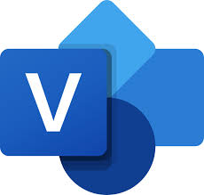

Upper CASE vahendid
Definitsioon
Upper CASE vahendite hulka kuuluvad tööriistad, mida kasutatakse projekti algfaasis, näiteks kasutajanõuete analüüsimisel ja dokumenteerimisel. Eelkõige mõeldud visualiseerimiseks, erinevate skeemide koostamiseks ja ka dokumentatsiooni genereerimiseks.
Isiklik kogemus
Projekti algfaasis olen tavaliselt loonud UML diagrammi kasutajakogemuse illustreerimiseks ning erinevate rakenduse osade omavaheliste suhete defineerimiseks (mis endpoint viib kuhu, milliste nuppude kaudu salvestatakse andmebaasi infot jne).
Olen ka veebilehe prototüüpimise tööriistu kasutanud, kus saab luua mock versioonid lõpliku lehekülje struktuurist, et visualiseerida lõpp-kasutaja kogemust. Materjalides näidetena toodud tööriistad IBM Rational Rose ja Sparx Systems Enterprise Architect on minu jaoks aga uued.
Dokumenteerimist olen vähesel määral teinud, seda ka suuremas osas manuaalselt.
UML diagrammi jaoks olen näiteks kasutanud
Eraserit 

Pildi viide
Veebilehe prototüübi jaoks olen kasutanud:


Pildi viide
Minu jaoks uued upper-CASE vahendid

Microsoft Visio - töövahend diagrammide ja vooskeemide loomiseks